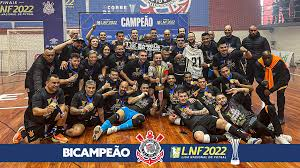

Resumo
- O futsal, ou futebol de salão, é um esporte praticado em quadra com cinco jogadores em cada time.
- Há duas versões sobre a origem do futsal. Uma diz que o esporte foi criado em 1934, no Uruguai, e outra diz que a modalidade é brasileira e foi criada em 1940.
- A partida de futsal é dividida em dois tempos de 20 minutos cada. O intervalo pode chegar a 15 minutos.
- A diferença fundamental entre o futsal e o futebol é que o primeiro é praticado em uma quadra e o segundo, em campo
- O primeiro livro de regras do futsal foi publicado em 1956. (Para ver as regras, clique aqui)
- A prática do futsal entre as mulheres foi reconhecida e oficializada somente em 1983.
- A Federação Internacional do Futebol Associado (Fica) é a entidade responsável por organizar as competições internacionais de futsal.
- O Brasil é o maior campeão na Copa do Mundo, com cinco títulos no futsal masculino.
- A maior competição de futsal do Brasil, é a LNF (Liga Nacional de Futsal).
A tabela abaixo representa os times e as suas posições na liga nacional de futsal (LNF) 2022
| TIMES |
POSIÇÕES |
| magnus (SP) |
1° |
| Joinville (SC) |
2° |
| ACBS (RS) |
3° |
| Praia Clube (MG) |
4° |
| Cascavel (PR) |
5° |
O Corinthians foi BiCampeão da LNF após vencer o Atlântico nas Finais da temporada 22/23, por 6 a 2 e 5 a 1

CLIQUE AQUI PRA VER A ORIGEM DO FUTSAL